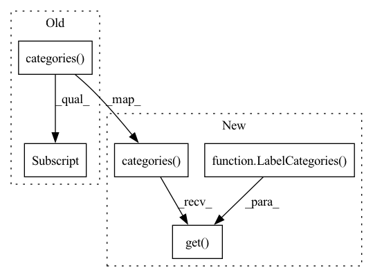

Pattern ID :7059
Before Change
def _get_label(self, label_id):
if label_id is None:
return ""
label_cat = self._extractor.categories()[AnnotationType.label]
return label_cat.items[label_id]
def _write_shape(self, shape):
if shape.label is None:After Change
def _get_label(self, label_id):
if label_id is None:
return ""
label_cat = self._extractor.categories().get(
AnnotationType.label, LabelCategories() )
return label_cat.items[label_id]
def _get_label_attrs(self, label):
label_cat = self._extractor.categories().get(In pattern: SUPERPATTERN
Frequency: 3
Non-data size: 5
Instances Fragment ID: 23442625
Project Name: openvinotoolkit/datumaro
Commit Name: ce699692017dd5e1c5de2a97c47a1b2332ae0b1b
Time: 2021-03-31
Author: maxim.zhiltsov@intel.com
File Name: datumaro/plugins/cvat_format/converter.py
M Class Name: _SubsetWriter
N Class Name: _SubsetWriter
M Method Name: _get_label(2)
N Method Name: _get_label(2)
M Parent Class:
N Parent Class:
M File Name: datumaro/plugins/cvat_format/converter.py
N File Name: datumaro/plugins/cvat_format/converter.py
M Start Line: 229
M End Line: 229
N Start Line: 230
N End Line: 231
Before Change
labels_file = osp.join(subset_dir, ImagenetTxtPath.LABELS_FILE)
with open(labels_file, "w", encoding="utf-8") as f:
f.write("\n".join(l.name
for l in extractor.categories()[AnnotationType.label] )
)
After Change
labels_file = osp.join(subset_dir, ImagenetTxtPath.LABELS_FILE)
with open(labels_file, "w", encoding="utf-8") as f:
f.writelines(l.name + "\n"
for l in extractor.categories().get(
AnnotationType.label, LabelCategories() )
)
Fragment ID: 23442624
Project Name: openvinotoolkit/datumaro
Commit Name: 745c16ac8d1d924e7784b3c6b9f6fe1a11a13624
Time: 2021-03-18
Author: maxim.zhiltsov@intel.com
File Name: datumaro/plugins/imagenet_txt_format.py
M Class Name: ImagenetTxtConverter
N Class Name: ImagenetTxtConverter
M Method Name: apply(1)
N Method Name: apply(1)
M Parent Class: Converter
N Parent Class: Converter
M File Name: datumaro/plugins/imagenet_txt_format.py
N File Name: datumaro/plugins/imagenet_txt_format.py
M Start Line: 101
M End Line: 119
N Start Line: 108
N End Line: 128
Before Change
self._writer.close_image()
def _write_meta(self):
label_cat = self._extractor.categories()[AnnotationType.label]
meta = OrderedDict([
("task", OrderedDict([
("id", ""),
("name", self._name),After Change
self._writer.close_image()
def _write_meta(self):
label_cat = self._extractor.categories().get(
AnnotationType.label, LabelCategories() )
meta = OrderedDict([
("task", OrderedDict([
("id", ""),
("name", self._name), Fragment ID: 23442626
Project Name: openvinotoolkit/datumaro
Commit Name: e3db419f7963c4bd28c3fc13422ca42e9d5e8feb
Time: 2021-03-20
Author: maxim.zhiltsov@intel.com
File Name: datumaro/plugins/cvat_format/converter.py
M Class Name: _SubsetWriter
N Class Name: _SubsetWriter
M Method Name: _write_meta(1)
N Method Name: _write_meta(1)
M Parent Class:
N Parent Class:
M File Name: datumaro/plugins/cvat_format/converter.py
N File Name: datumaro/plugins/cvat_format/converter.py
M Start Line: 193
M End Line: 193
N Start Line: 194
N End Line: 195